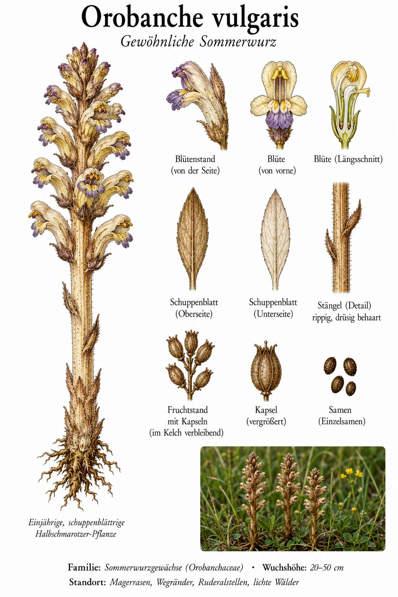
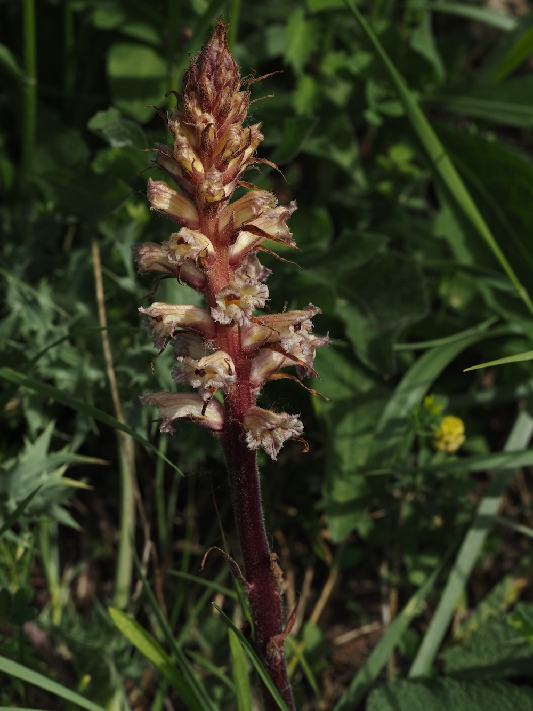
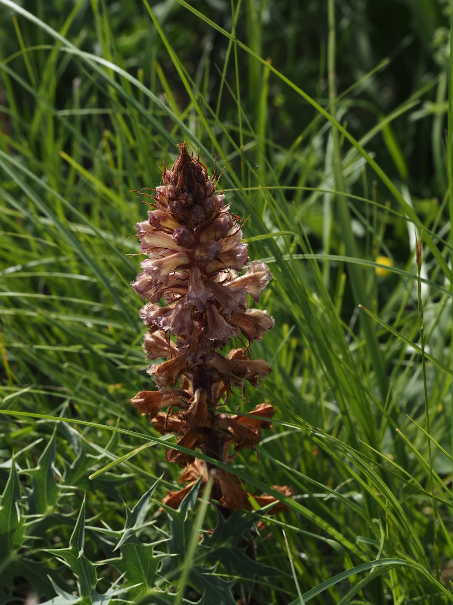
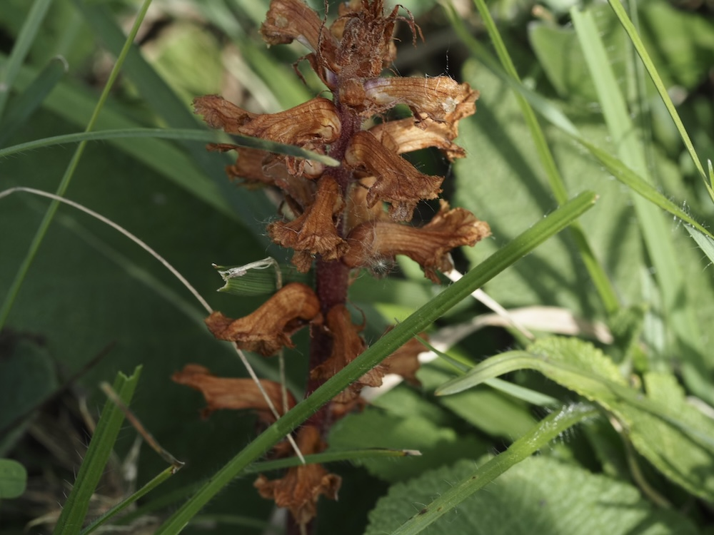

Eine Pflanze ganz ohne Blattgrün – die Sommerwurz lebt vom Saft ihrer Wirte.




Blass und blattgrünlos
Wer die Sommerwurz zum ersten Mal sieht, hält sie kaum für eine Blütenpflanze: Sie hat keine grünen Blätter, sondern nur bräunlich-gelbe Schuppen am Stängel. Die hellen, violett geäderten Lippenblüten stehen in einer dichten Ähre. Man findet sie auf Magerrasen, an Wegrändern und in lichten Wäldern – immer dort, wo ihre Wirtspflanzen wachsen.
Vollschmarotzer ohne Photosynthese
Die Sommerwurz besitzt kein Blattgrün und kann daher keine Photosynthese betreiben. Stattdessen bohrt sie mit besonderen Saugorganen (Haustorien) die Wurzeln anderer Pflanzen an und entzieht ihnen Wasser, Zucker und Nährstoffe – ein echter Vollschmarotzer. Viele Sommerwurz-Arten sind dabei auf ganz bestimmte Wirtspflanzen spezialisiert.
Wissenswertes & Merksätze
Kein Grün, kein Eigenleben
Ohne Blattgrün keine Photosynthese: Die Sommerwurz deckt ihren gesamten Bedarf über die Wurzeln ihrer Wirte – ein Vollschmarotzer.
Wirt gesucht
Wo die passende Wirtspflanze fehlt, fehlt auch die Sommerwurz. Sie kann ohne ihren Wirt nicht überleben.